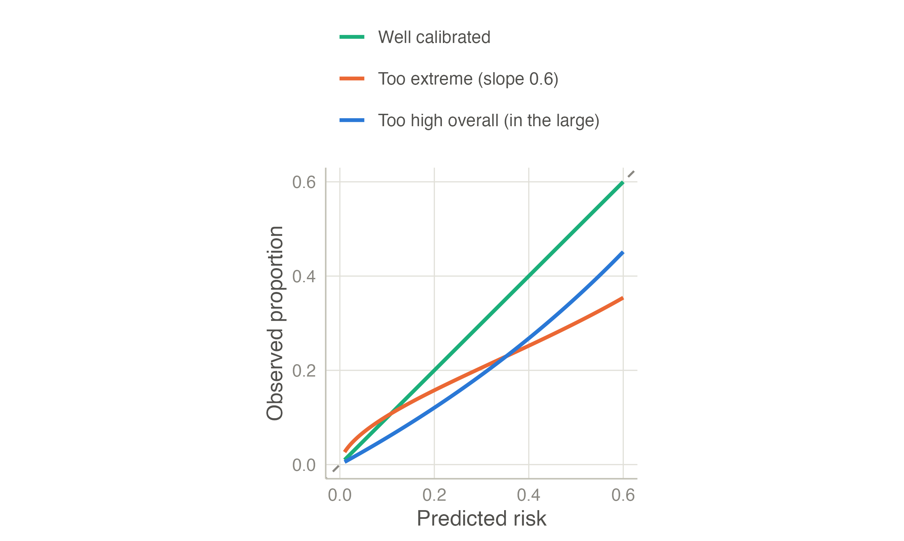
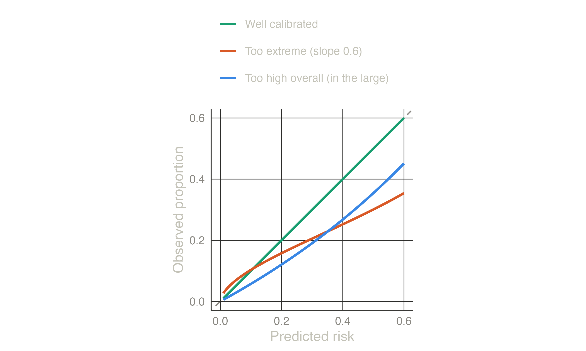

A prediction model is judged on four aspects (Steyerberg et al. 2010). None of them replaces the others: a model can rank patients well and still give wrong risks, or give right risks that change no decision.
| Aspect | Question | Main measures in clinpred |
|---|---|---|
| Discrimination | Do patients with the outcome get higher predictions? | C-statistic (AUC); Harrell’s and Uno’s C, time-dependent AUC (Cox) |
| Calibration | Are the predicted risks right? | calibration-in-the-large, calibration slope, O/E, ICI, calibration plot |
| Overall | How close are predictions to outcomes? | Brier score, scaled Brier, R² (Nagelkerke, Cox–Snell; R², RMSE, MAE for linear) |
| Clinical utility | Does using the model improve decisions? | net benefit, decision curves; sensitivity, specificity at a threshold |
The C-statistic is the probability that, of two patients, one with and one without the event, the one with the event has the higher predicted risk. For a binary outcome it equals the area under the ROC curve (AUC). 0.5 is a coin toss, 1 is perfect separation; 0.7–0.8 is common for clinical models. clinpred gives DeLong’s confidence interval (DeLong et al. 1988).
For time-to-event outcomes, Harrell’s C compares pairs whose order of events is known; Uno’s C weights pairs for censoring and restricts them to the horizon (Uno et al. 2011); the time-dependent AUC separates patients with an event by the horizon from those event-free at it. Royston’s D measures the separation of the prognostic index (Royston and Sauerbrei 2004).
Discrimination depends on the case-mix: in a population where patients differ more, the same model discriminates better. Comparing AUCs across populations needs care (see the external validation example).
Calibration is the agreement between predicted risks and observed frequencies, and it is the aspect most often neglected — “the Achilles heel of predictive analytics” (Van Calster et al. 2019). A miscalibrated model can mislead every patient it is used on, whatever its AUC.


The measures follow a hierarchy (Van Calster et al. 2019):
The Brier score is the mean squared difference between predicted risk and outcome (0/1): lower is better, and it mixes calibration and discrimination. Because its value depends on the outcome frequency, clinpred also reports the scaled Brier score, 1 − Brier / Brier of a model that gives everyone the overall risk (for Cox models, censoring weighted, the index of prediction accuracy (Graf et al. 1999; Kattan and Gerds 2018)). A negative scaled Brier in new patients means the model is worse than knowing the average risk. Nagelkerke’s and Cox–Snell’s R² are likelihood-based alternatives; the Cox–Snell R² is the input of the sample size criteria.
For a continuous outcome, R² is computed around the mean of the data where it is measured, so it can be negative in validation data; RMSE and MAE are in the units of the outcome.
A model is used to make decisions: treat, test further, or reassure. Classifying patients at a risk threshold gives sensitivity, specificity and predictive values. The threshold should reflect the harm of a false positive relative to the benefit of a true positive: a threshold of 10% means that treating 1 patient with the event is worth treating 9 without it.
Decision curve analysis (Vickers and Elkin 2006) makes this explicit. The net benefit at threshold t counts true positives minus false positives weighted by the odds of the threshold:
\[\text{NB}(t) = \frac{TP}{N} - \frac{FP}{N}\cdot\frac{t}{1-t}.\]
The model is useful at thresholds where its net benefit exceeds both treat all and treat none (NB = 0). The interventions avoided per 100 patients restate the gain as unnecessary treatments spared at the same benefit. For Cox models, clinpred estimates the event risks above each threshold by Kaplan–Meier, so censoring is accounted for.
TRIPOD+AI (Collins et al. 2024) asks for discrimination and calibration (with a calibration plot) in the development data corrected for optimism, and in every validation; clinical utility when the model is meant to guide decisions. The reporting page maps each item to clinpred’s output.